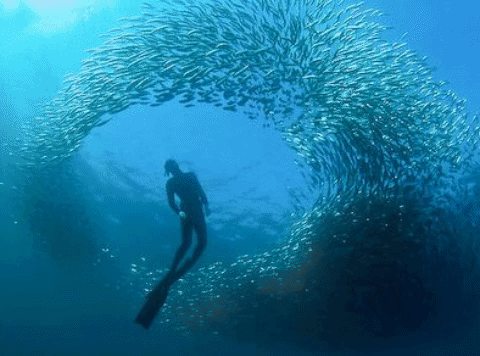
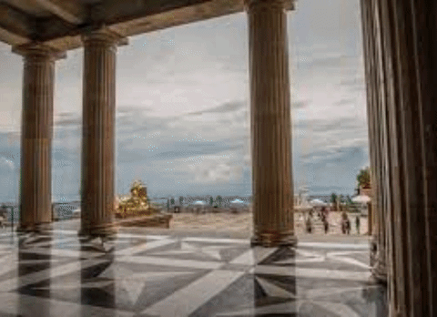
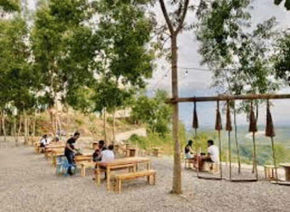

Top 7 Tourist Spot in Cebu City1. Tops of Cebu
|
Tops Cebu is arguably the most famous lookout in Cebu City, with panoramic views of the sprawling metropolitan, all the way out to Lapu Lapu and its neighbouring islands. Its a popular spot amongst both locals and tourists to watch the sunset, take their significant others on dates and have a cheap dinner under the stars. The best part is, it’s just a short drive from the city centre. Tops Cebu is in the mountainous town of Busay, around 25 mintues from Lahug City. If you have your own car or motorbike you can just use the map below or Google Maps and search for Tops Lookout. If you’re taking public transport, you can take any jeepney going to Busay and get off at JY Square Mall. There will be plenty of motorcycle taxis (habal-habals) fighting for your attention. Tell them you want to go to Tops Lookout and make sure you don’t pay more than ₱100/USD $2. Lost looking tourists that don’t know any better can get ripped off, so now you know the going rate is only ₱100. |
|
The , also called the bait ball, is a natural phenomenon that happens when massive schools of sardines swim in the shallow waters to feed on planktons. They stick and swim together to protect themselves from larger prey and generally stay safe in the ocean. The sardines are so harmless that you can swim through them without getting grazed. And if you swim further up to 20-30 meters, you can see the colorful reefs filled with other vibrant creatures. What makes this tourist attraction even more awe-inspiring is that the magnificent creatures are well protected, like the other natural spectacles on the island. Fishermen are prohibited from catching or herding these fishes, so tourists can experience this event in its raw and beautiful state. They swim relatively close to shore, so first-time divers and snorkelers will get to experience this extraordinary event, too! |
2. Moalboal Sardine Run |
3. Bantayan Island |
If you're in search of sun, sea, and sand without the big crowds, you should add Bantayan Island, Cebu in your travel bucket list. Bantayan Island, located at the northernmost tip of Cebu, boasts stunning beaches and eco-tourism sites where you can do sightseeing, swimming, cliff diving, island-hopping, kayaking, and even skydiving. Bantayan Island in Cebu got its name from the term Bantayan sa Hari, which means "Watchtowers of the King." Eighteen watchtowers were built here during the time of the 22nd Governor-General Sebastian Hurtado de Corcuera when Moro pirates raided the island looking for slaves. |
|
If you've got a taste for a real, heart-stopping adventure in the heart of Cebu City, Badian canyoneering is what you need. Badian is known for its canyoneering or canyoning, which is flocked to by thrill-seekers from all over the world. If you are looking for more adventure, this canyoneering tour also includes a visit to the famous Kawasan Falls Cebu where you can explore and enjoy. Your canyoneering adventure will begin with a motorbike/habal-habal ride going to the starting point. Your pickup will take you from your hotel to Badian where you'll be given time to find breakfast; you'll need your strength as you start the trek and canyoneering activity. You'll put your courage to the test as the jungle trail in Badian includes jumping, rappelling, and swimming through the cliffs, leaping off 30-foot high cliffs and into the water. Then it's lunchtime at the beautiful Kawasan Falls Cebu where you'll see turquoise waters, perfect for a post-lunchtime swim. These spectacular waterfalls are clear and picturesque, perfect for documenting your day of thrilling adventures before you are taken back to Cebu City and to your hotel. |
4. Kawasan Falls |
5. Sirao |
I must say, it happened for a reason. First, it proved the strong influence and effect social media could do. Second, it was a (hard) lesson learned by the Sirao Flower Garden management and the officials as well. It also became a good reference from the new attractions, and it was the start of serious promotion on responsible tourism. But now, Sirao Flower Garden is ready to attract more guests as it continuously improves and renovates the whole place. In fact, it now features more “Instagrammable” spots and an infinity pool. They surely know how to please both local and foreign tourists. |
|
Tucked in Cebu City’s highland barangay of Busay, construction of Temple of Leah started in 2012. The temple is reportedly made up of 24 chambers that house an art gallery, museum, library and bar, among others. It is also adorned with life-sized statues of Roman gladiators, lions and angels all over. A wide stone steps give everyone a free access to the portico and towards the lobby where a brass 10-foot statue of Leah is erected. The commemorative plaque on the base of the statue reads: “Beloved Wife and Mother: Leah V. Albino-Adarna was chosen Matron Queen of her Alma Mater the University of Southern Philippines. This bronze statue portrays her composure and regal bearing when she was crowned. May the beholder discern her innate beauty, poise and gentleness.” |
6. Temple of Leah |
7. Nanda |
A view that rivals that from Busay is what you’ll find here. In the day, the lush slopes of the mountains of Consolacion fill the landscape with vibrant verdant colors. While at night, the glittering city lights spark to beyond a tranquil mountain scene. This dining spot atop Garing Hills of Brgy. Garing provides a spacious open-air eating area with plenty of food choices cooked in a private kitchen. The altitude and surrounding greenery make it the perfect place to cleanse your lungs while satisfying your palate. |